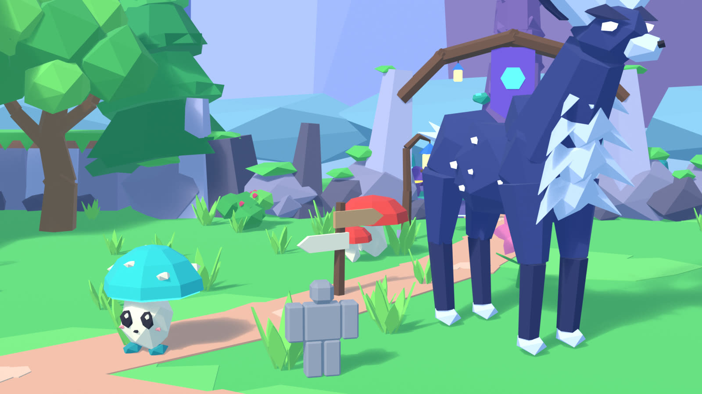

Projet phareJeu vidéo · Projet personnel
Monster Museum
Jeu multijoueur Roblox : 55 000 lignes de Luau typé, architecture serveur autoritaire et tests automatisés.
- 216
- fichiers Luau
- 55 k
- lignes de code
- 95
- commits
- 34
- services serveur
- Luau (strict)
- Roblox Studio
- Rojo
- Lune (tests)
- Blender + Python
- Git